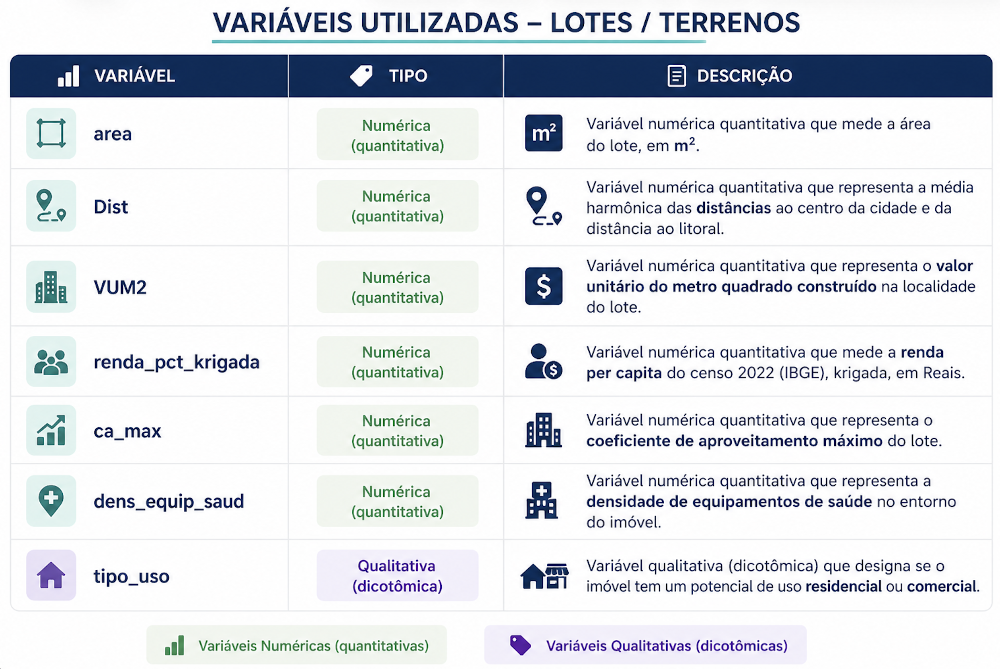
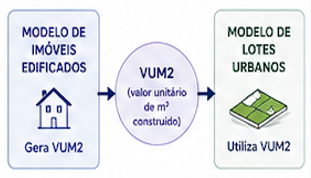
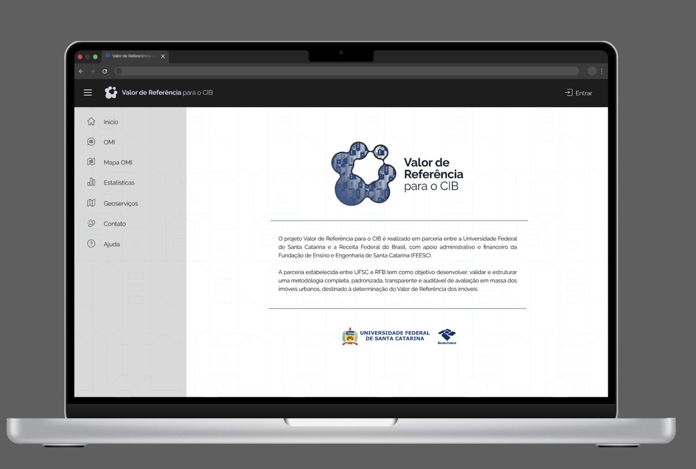
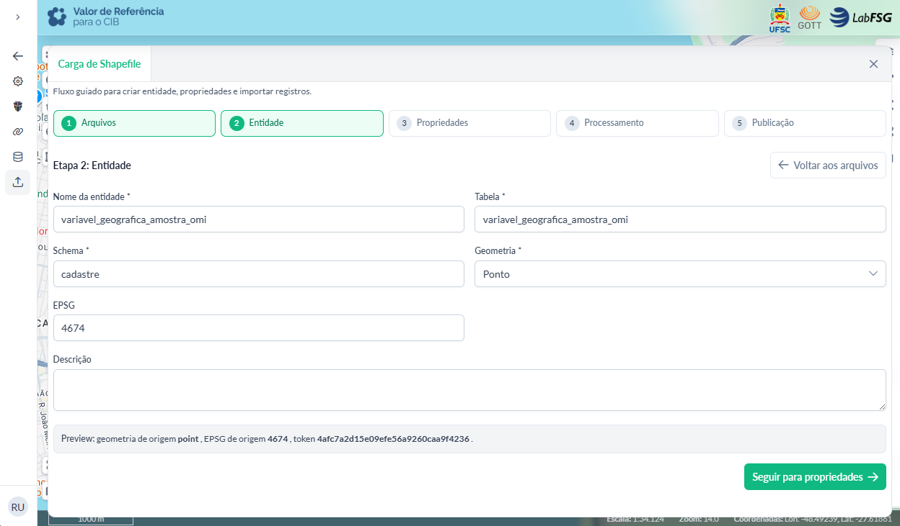
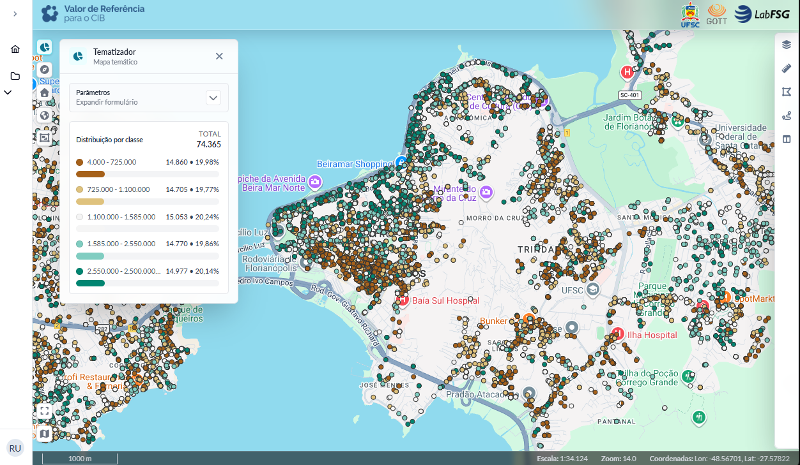
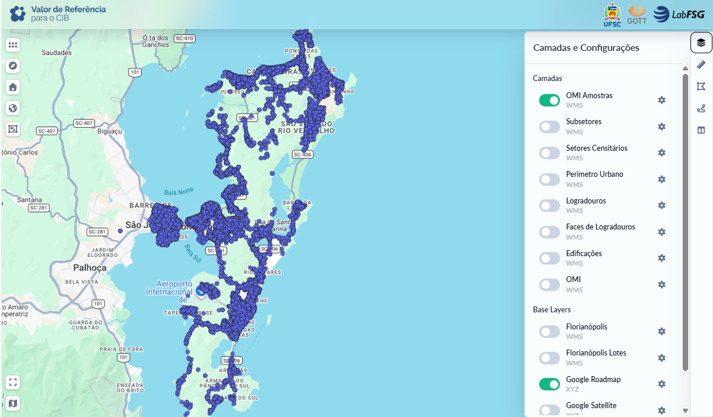
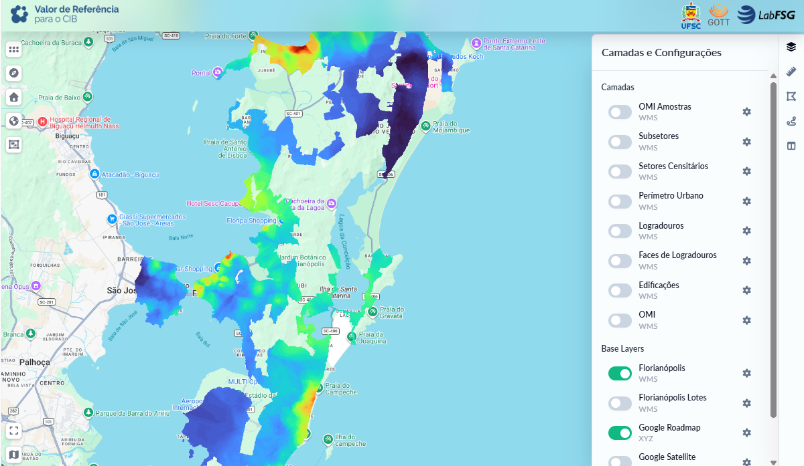
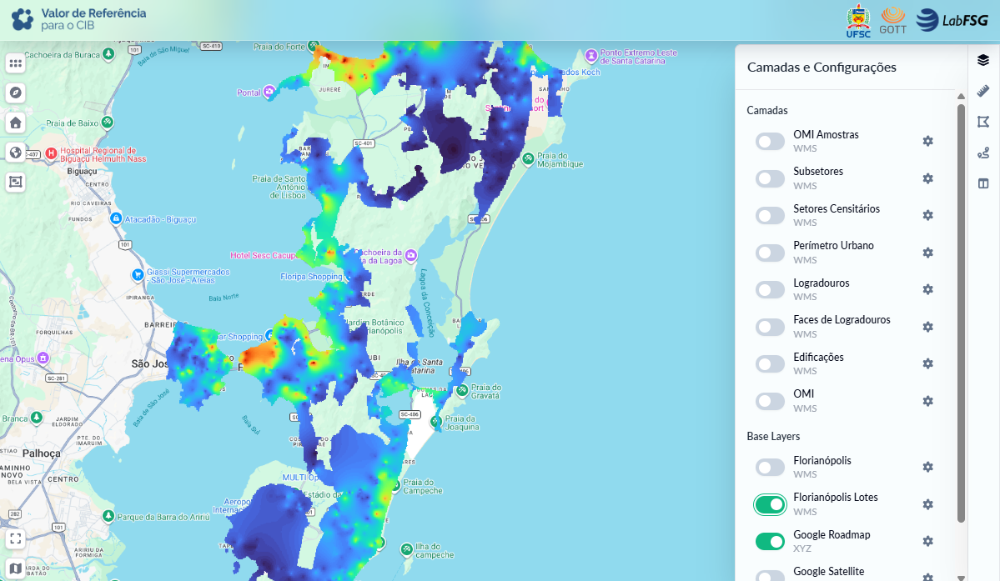

4 Principais Resultados Estratégicos
Os resultados alcançados no período vão além da execução operacional das atividades, evidenciando avanços estruturais relevantes para a consolidação da metodologia proposta no âmbito do projeto. Esses resultados refletem a maturidade progressiva das soluções desenvolvidas, especialmente no que se refere à integração entre dados, modelagem, infraestrutura e governança, bem como à capacidade de replicação em diferentes contextos territoriais.
Outro aspecto de destaque no período foi o avanço na formalização e consolidação do fluxo metodológico do projeto, com a definição mais clara das etapas, dos encadeamentos entre processos e da padronização dos procedimentos técnicos. Essa evolução se refletiu na estruturação de um fluxo integrado para as Etapas 1 a 3 — Observatório, Bases Territoriais e Modelagem — contemplando desde a ingestão e tratamento dos dados, passando pela organização territorial e geração de variáveis, até a aplicação dos modelos de avaliação.
Paralelamente, houve avanço na organização e padronização dos scripts de processamento, garantindo maior consistência na execução das rotinas e controle sobre as transformações realizadas nos dados. Esses elementos são fundamentais para assegurar reprodutibilidade, transparência, rastreabilidade e auditabilidade, requisitos essenciais para a validação técnica e futura adoção institucional da metodologia pela Receita Federal do Brasil.
O detalhamento completo do fluxo metodológico estruturado, incluindo suas etapas, dependências e principais processos, encontra-se apresentado no Apêndice 1.
A seguir, são apresentados os principais resultados estratégicos do projeto, organizados em três dimensões complementares, com foco na Prova de Conceito (POC) de Florianópolis, na evolução da infraestrutura tecnológica e nos blocos transversais.
No âmbito da POC, são evidenciados os avanços metodológicos e operacionais alcançados nas Etapas 1 a 3 do projeto. Na dimensão de infraestrutura, são apresentados os progressos relacionados à organização dos ambientes computacionais, armazenamento de dados e suporte às atividades técnicas. Por fim, nos blocos transversais, destacam-se os estudos desenvolvidos ao longo do período e a plataforma de visualização dos dados, que contribuem para a análise, validação e comunicação dos resultados.
4.1 Validação da POC
A seguir, são apresentados os resultados referentes à validação da Prova de Conceito (POC) de Florianópolis, que constitui o principal ambiente de teste e consolidação da metodologia proposta no projeto. Essa etapa tem como objetivo avaliar, de forma integrada, a consistência dos dados, a robustez dos processos e a aderência dos resultados obtidos, permitindo verificar a viabilidade técnica da abordagem adotada e sua capacidade de replicação em escala nacional. Os resultados estão organizados por etapa do projeto, evidenciando os avanços alcançados e o nível de maturidade metodológica em cada frente de atuação.
Nesse contexto, inicia-se a análise pela Etapa 1 – Observatório do Mercado Imobiliário, responsável pela estruturação, qualificação e validação dos dados de mercado. Trata-se de uma etapa fundamental para o projeto, uma vez que estabelece a base informacional sobre a qual se apoiam as demais fases, influenciando diretamente a consistência das variáveis, a qualidade da modelagem e a confiabilidade dos resultados finais.
4.1.1 Etapa 1: Observatório do Mercado Imobiliário
No âmbito da Etapa 1 – Observatório do Mercado Imobiliário, foram identificados e sistematizados dez resultados estratégicos principais, que refletem os avanços alcançados na validação da Prova de Conceito (POC) de Florianópolis. Esses resultados evidenciam a evolução da arquitetura de dados, a consolidação dos processos de tratamento e validação das informações e o nível de maturidade alcançado na estruturação do Observatório, constituindo a base para o desenvolvimento das etapas subsequentes.
4.1.1.1 Construção de uma base confiável de ofertas imobiliárias
No âmbito da Prova de Conceito (PoC) de Florianópolis, foi estruturado um processo completo de qualificação de dados imobiliários, superando a lógica tradicional baseada exclusivamente na coleta bruta de anúncios. A metodologia adotada contemplou rotinas integradas de ingestão, saneamento cadastral, padronização textual, eliminação de duplicidades, validação de consistência e controle de integridade dos registros.
A base inicial foi composta por 83.869 ofertas imobiliárias provenientes de portais de mercado, contendo elevado nível de ruído posicional e cadastral, incluindo inconsistências de endereçamento, ausência de atributos obrigatórios, duplicidades e divergências entre registros equivalentes. Para enfrentar essas limitações, foram aplicadas rotinas automáticas e semiautomáticas de tratamento, associadas a mecanismos de classificação e validação da qualidade dos dados.
O processo permitiu reduzir significativamente as inconsistências estruturais da base, elevando o nível de confiabilidade das informações utilizadas nas etapas subsequentes do projeto. Além da melhoria da consistência cadastral, a metodologia possibilitou maior rastreabilidade dos registros, padronização operacional e controle sobre a origem e transformação dos dados ao longo do pipeline analítico.
Dessa forma, a PoC demonstrou a viabilidade de construção de uma base de mercado estruturada e tecnicamente confiável para uso fiscal, reduzindo a dependência de informações puramente autodeclaradas e ampliando o potencial de utilização dos dados de mercado na geração do Valor de Referência.
Resultado estratégico:
Criação de uma base de mercado qualificada, com maior consistência, rastreabilidade e confiabilidade para uso fiscal, reduzindo a dependência de dados autodeclarados ou sem validação, constituindo o núcleo de dados do Observatório do Mercado Imobiliário.
4.1.1.2 Estruturação de um pipeline completo de dados
Foi desenvolvido um pipeline técnico integrado para processamento de dados imobiliários em larga escala, contemplando todas as etapas do fluxo operacional do Observatório: ingestão, tratamento, validação, classificação e armazenamento dos dados.
A arquitetura implementada integrou o Datalake em formato Parquet ao ambiente analítico PostgreSQL/PostGIS, permitindo processamento eficiente de grandes volumes de dados espaciais e alfanuméricos. O fluxo operacional foi estruturado de forma modular e reprodutível, possibilitando rastreabilidade integral das transformações realizadas em cada etapa do processamento.
A metodologia implementada contemplou:
ingestão automatizada e normalização dos dados;
padronização textual e cadastral;
geocodificação via ArcGIS;
validação cruzada com a base oficial do CNEFE;
classificação de qualidade posicional e cadastral;
armazenamento estruturado em ambiente espacial relacional.
Essa estrutura permitiu processar de forma controlada os 83.869 registros da PoC de Florianópolis, assegurando desempenho computacional, escalabilidade operacional e controle metodológico sobre os resultados obtidos.
Além do ganho operacional, a adoção de um pipeline estruturado permitiu separar claramente as etapas de transformação, validação e qualificação dos dados, favorecendo auditoria técnica, repetibilidade metodológica e futura replicação do modelo em outros municípios.
Resultado estratégico:
Operação baseada em processo técnico (pipeline) reprodutível, documentado e escalável, com capacidade de processamento de grandes volumes de dados, garantindo rastreabilidade, desempenho, controle de qualidade e potencial de replicação nacional.
4.1.1.3 Uso do CNEFE como referência oficial de validação posicional
O Cadastro Nacional de Endereços para Fins Estatísticos (CNEFE/IBGE) foi adotado como referência oficial de validação espacial da Prova de Conceito, atuando como ground truth para qualificação das coordenadas provenientes do mercado imobiliário.
A utilização do CNEFE permitiu incorporar ao processo metodológico uma base governamental com cobertura nacional, padronização textual de endereços e classificação do nível de precisão geográfica (nv_geo_coord), proporcionando maior rigor técnico à validação posicional dos registros.
A metodologia foi estruturada para realizar correspondências progressivas entre os dados de mercado e a base oficial, utilizando critérios hierárquicos de validação e thresholds ajustados conforme o nível de precisão espacial do CNEFE. Essa abordagem permitiu reduzir inconsistências de localização e aumentar a confiabilidade espacial dos dados utilizados no projeto.
A integração com o CNEFE foi decisiva para viabilizar os 54.007 matches válidos obtidos na PoC, consolidando um modelo metodológico aderente às exigências técnicas da Receita Federal do Brasil para construção do Valor de Referência.
Além da validação espacial, a utilização do CNEFE permitiu incorporar uma camada institucional de confiabilidade ao Observatório, reduzindo a dependência exclusiva das coordenadas oriundas dos portais comerciais.
Resultado estratégico:
Fortalecimento da robustez metodológica por meio do uso de base governamental oficial (CNEFE) como referência para validação espacial, garantindo maior confiabilidade dos resultados e alinhamento institucional.
4.1.1.4 Desenvolvimento e aplicação do Geocoder V3
No desenvolvimento da Prova de Conceito de Florianópolis, foi concebido e implementado o Geocoder V3, um motor avançado de validação espacial estruturado especificamente para enfrentar os elevados níveis de ruído presentes nos dados do mercado imobiliário.
A metodologia foi baseada em uma lógica hierárquica de decisão em cascata (níveis L1 a L6), priorizando inicialmente correspondências determinísticas de maior rigor — como CEP, logradouro e número — e avançando progressivamente para abordagens mais flexíveis, incluindo fuzzy matching, interpolação espacial e regras adaptativas de aceitação.
Os thresholds de validação foram calibrados dinamicamente conforme o nível de precisão geográfica do CNEFE (nv_geo_coord), permitindo equilibrar taxa de recuperação dos registros e controle da qualidade posicional.
A aplicação da metodologia resultou em 54.007 registros com correspondência válida na base oficial, representando uma taxa de sucesso de 87,9% sobre os 61.416 registros elegíveis para validação espacial.
Além da elevada capacidade de correspondência, destacou-se o desempenho computacional do modelo, permitindo o processamento de aproximadamente 52 mil registros em cerca de 2,4 minutos, com desempenho aproximadamente 17 vezes superior às abordagens inicialmente avaliadas durante o desenvolvimento da PoC.
Os resultados demonstram não apenas a viabilidade técnica do Geocoder V3, mas também sua capacidade operacional para aplicação em larga escala, consolidando o modelo como componente central da arquitetura metodológica do Observatório.
Resultado estratégico:
Implementação de solução técnica própria para validação e qualificação espacial das ofertas imobiliárias, com elevada precisão, alto desempenho computacional e capacidade de operação em larga escala, com potencial de replicação em nível nacional.
4.1.1.5 Processamento expressivo da base da POC Florianópolis
A Prova de Conceito demonstrou de forma consistente a capacidade operacional do Observatório para processamento de dados imobiliários em larga escala, abrangendo todo o ciclo de tratamento, validação e qualificação das informações de mercado.
A base inicial foi composta por 83.869 ofertas imobiliárias, integralmente submetidas às rotinas estruturadas do pipeline analítico, incluindo filtros de elegibilidade, validação posicional, classificação de qualidade e controle de integridade cadastral.
Desse universo, 61.416 registros foram considerados elegíveis para validação espacial, atendendo aos critérios mínimos de completude e consistência cadastral definidos na metodologia. Na sequência, 54.007 registros apresentaram correspondência válida com a base oficial do CNEFE, evidenciando elevada capacidade de integração entre dados de mercado e referência governamental.
Após aplicação dos filtros de qualidade posicional e cadastral, o processo resultou em aproximadamente 14.921 registros classificados como duplamente validados, correspondendo ao núcleo de maior confiabilidade da base analítica, o que resultou em uma taxa de retenção final da ordem de 30% com alta qualidade posicional, refletindo o rigor metodológico adotado na qualificação da base.
Além dos resultados quantitativos, destacou-se o desempenho computacional da infraestrutura implementada, evidenciando capacidade operacional para processamento massivo sem comprometimento da qualidade ou do tempo de resposta.
A PoC validou não apenas a metodologia sob o ponto de vista técnico, mas também sua viabilidade operacional em ambiente real, demonstrando potencial para expansão em escala nacional.
Resultado estratégico:
Validação da capacidade operacional para processamento de grandes volumes de dados imobiliários, com eficiência computacional, controle de qualidade e viabilidade em escala urbana.
4.1.1.6 Criação de filtros independentes de qualidade
Foi estruturado um modelo metodológico baseado em dois eixos independentes de validação: qualidade posicional e qualidade cadastral/econômica. Permitindo uma análise mais precisa e controlada dos dados de mercado. Essa abordagem separa explicitamente a qualidade posicional que está relacionada à acurácia da localização do imóvel, da qualidade cadastral/econômica que está associada à consistência dos atributos da oferta, como área, valor e características físicas.
A qualidade posicional foi avaliada por meio das rotinas de validação espacial implementadas no Geocoder V3, permitindo classificar os registros conforme o grau de confiabilidade da localização do imóvel (flag is_problematic).
Paralelamente, a qualidade cadastral/econômica foi tratada por meio de rotinas específicas de detecção de inconsistências, duplicidades, campos ausentes e outliers estatísticos (flag is_outlier), garantindo controle sobre integridade dos atributos descritivos e econômicos dos imóveis.
Os resultados evidenciaram a importância dessa separação metodológica. Do conjunto analisado, 25.325 registros apresentaram validação posicional satisfatória; entretanto, apenas 14.921 registros atenderam simultaneamente aos critérios de qualidade espacial e integridade cadastral.
Esse comportamento demonstrou que a validação espacial isoladamente não é suficiente para garantir a confiabilidade fiscal do dado, tornando necessária a análise combinada dos dois eixos de qualidade.
A estrutura implantada amplia a flexibilidade analítica do Observatório, permitindo utilização diferenciada dos registros conforme o objetivo técnico da análise e aumentando a transparência sobre os critérios de qualificação utilizados.
Resultado estratégico:
Implementação de modelo de validação baseado em filtros independentes de qualidade (posicional e cadastral), ampliando o controle sobre os dados e permitindo análises mais precisas, transparentes e tecnicamente consistentes. Essa estrutura possibilita tratar de forma distinta a validação espacial e a integridade dos atributos, reconhecendo que uma oferta pode estar corretamente localizada, mas apresentar inconsistências em variáveis como valor, área ou duplicidade.
4.1.1.7 Geração da base duplamente validada
A aplicação integrada dos critérios de qualidade posicional e cadastral resultou na construção de uma base final duplamente validada, representando o principal produto técnico da Prova de Conceito (POC) de Florianópolis. Essa base corresponde ao subconjunto de registros que atendem simultaneamente:
aos critérios de validação posicional;
aos critérios de consistência cadastral e econômica;
aos controles de integridade e ausência de inconsistências relevantes.
Como resultado, foram identificados 14.921 registros plenamente validados, o que corresponde a aproximadamente 17,8% da base total de ofertas analisadas. Estes registros foram classificados como aptos para utilização em análises fiscais e modelagem de valor, constituindo a camada de maior confiabilidade do Observatório. Além disso, a qualidade espacial dessa base é evidenciada por uma mediana de erro posicional de 8,86 metros, indicando alta precisão na localização dos registros, compatível com aplicações fiscais e análises territoriais detalhadas.
Metodologicamente, essa estrutura representa uma evolução relevante em relação às abordagens tradicionais de monitoramento imobiliário, pois reconhece que a qualidade espacial e a qualidade cadastral devem ser avaliadas de forma independente e complementar.
Esse conjunto de dados representa, portanto, uma base qualificada e confiável, apta para utilização direta em processos de avaliação em massa, modelagem de valores e definição de políticas públicas. Ao restringir a análise aos registros que atendem aos dois critérios de qualidade, o projeto reduz significativamente o risco de distorções decorrentes de inconsistências ou imprecisões, assegurando maior robustez aos resultados.
Dessa forma, a geração dessa base duplamente validada consolida a efetividade da metodologia adotada, demonstrando sua capacidade de transformar dados heterogêneos de mercado em informação estruturada, confiável e aderente às exigências institucionais.
Resultado estratégico:
Disponibilização de uma base de dados duplamente validada, com elevado rigor técnico e alta precisão posicional, representando um conjunto qualificado de imóveis apto para análises fiscais diretas e aplicações em políticas de avaliação em massa, com elevado nível de confiabilidade.
4.1.1.8 Melhoria da cobertura analítica com vias curtas
No âmbito da Prova de Conceito (PoC) de Florianópolis, foi desenvolvida e aplicada uma metodologia específica de recuperação espacial para registros classificados com precisão intermediária (precisão = 3), com o objetivo de ampliar a cobertura analítica da base sem comprometer os critérios de qualidade posicional estabelecidos pelo projeto.
A metodologia foi estruturada a partir da análise de proximidade espacial entre os imóveis e a malha viária, com foco na identificação de vias curtas — logradouros integralmente inseridos em um único setor censitário. A premissa técnica adotada considera que imóveis posicionados mais próximos de vias curtas apresentam maior confiabilidade territorial, mesmo em situações de endereçamento incompleto ou parcialmente inconsistente.
Essa abordagem permitiu implementar um processo controlado de inferência espacial para reaproveitamento de registros que, em metodologias convencionais, seriam descartados por insuficiência de precisão cadastral. O modelo foi concebido com caráter conservador, incorporando apenas registros cuja evidência espacial apresentasse consistência suficiente para manutenção da confiabilidade analítica da base.
A aplicação da metodologia foi realizada sobre um universo de 12.077 registros classificados com precisão intermediária, dos quais 1.236 foram considerados aptos para reaproveitamento espacial, correspondendo a uma taxa de recuperação de 10,23%.
Como resultado, a cobertura analítica da base foi ampliada de aproximadamente 73% para 81%, representando ganho expressivo na disponibilidade de dados utilizáveis para as etapas subsequentes de modelagem e análise territorial.
Além do aumento quantitativo da cobertura, a estratégia demonstrou a capacidade do modelo de equilibrar expansão analítica e controle de qualidade, evitando introdução de distorções relevantes na base final.
Os resultados evidenciam que técnicas controladas de inferência espacial podem atuar como mecanismo complementar de qualificação territorial, especialmente em cenários urbanos caracterizados por baixa completude cadastral ou inconsistências de endereçamento.
Resultado estratégico:
Ampliação da cobertura analítica da base por meio de técnicas controladas de inferência espacial, possibilitando o reaproveitamento de registros inicialmente considerados frágeis, com manutenção dos critérios de qualidade e sem comprometimento da precisão posicional.
4.1.1.9 Identificação de limitações para lotes e terrenos
Durante a execução da Prova de Conceito (PoC) de Florianópolis, foi identificado desempenho significativamente inferior no processamento de imóveis não edificados, especialmente lotes vagos e terrenos urbanos, quando comparado aos demais tipos de imóveis analisados. Esse comportamento evidenciou uma limitação estrutural relevante tanto das bases disponíveis quanto da própria metodologia de validação posicional aplicada no projeto.
Os resultados demonstraram que a taxa de processamento para lotes e terrenos atingiu aproximadamente 55,0%, valor significativamente inferior à média geral observada para os demais tipos de imóveis, cuja taxa de correspondência situou-se em torno de 89,6%. Além da menor capacidade de validação, esse segmento apresentou maior distância média entre coordenadas, da ordem de 569,92 metros, indicando maior dispersão espacial e menor aderência aos critérios de precisão estabelecidos pelo modelo.
A análise metodológica permitiu identificar como principais fatores associados a esse desempenho:
ausência ou inconsistência de numeração predial, situação recorrente em lotes vagos;
menor cobertura do CNEFE para imóveis não edificados, uma vez que a base oficial é predominantemente estruturada a partir de endereços vinculados a edificações;
degradação dos scores de matching durante os processos de validação, especialmente em registros com baixa completude cadastral ou divergência significativa entre os dados informados e os registros oficiais disponíveis.
Os resultados evidenciam que, embora o modelo desenvolvido apresente elevada robustez para imóveis edificados, existem desafios específicos relacionados à validação territorial de lotes e terrenos urbanos, sobretudo em áreas de expansão urbana ou baixa padronização cadastral.
A identificação dessas limitações constitui um resultado metodológico importante da PoC, pois permite orientar de forma objetiva os aprimoramentos necessários para evolução do modelo, incluindo:
revisão e calibração de thresholds específicos;
incorporação de bases territoriais complementares;
utilização de referências espaciais auxiliares;
desenvolvimento de estratégias diferenciadas para imóveis não edificados.
Além disso, a análise demonstrou que parte das limitações observadas decorre não apenas da metodologia implementada, mas também das próprias fragilidades estruturais existentes nas bases territoriais urbanas atualmente disponíveis.
Dessa forma, a PoC contribuiu para delimitar tecnicamente um dos principais desafios associados à expansão nacional do modelo, fornecendo subsídios concretos para futuras evoluções metodológicas e operacionais do Observatório.
Resultado estratégico:
Identificação de limitações estruturais no processamento de lotes e terrenos, configurando um ponto crítico metodológico que demanda tratamento específico antes da expansão em nível nacional, orientando o aprimoramento da abordagem para assegurar maior abrangência, consistência e qualidade das análises.
4.1.1.10 Validação comparativa com Google Maps
Foi realizada uma análise de acurácia posicional utilizando o Google Maps como referência externa de validação (ground truth), com o objetivo de avaliar o desempenho relativo das coordenadas provenientes do mercado (ArcGIS) e da base oficial (CNEFE). A análise foi conduzida com uma amostra de aproximadamente 3.200 registros, geocodificados manualmente, permitindo maior no processo de comparação e avaliação da qualidade espacial.
Os resultados demonstraram que:
ArcGIS apresentou melhor desempenho médio geral para posicionamento imediato dos registros;
CNEFE apresentou desempenho superior nos níveis mais rigorosos de precisão espacial (níveis 1 e 2);
nível L1 do modelo apresentou aproximadamente 88,3% dos registros posicionados a menos de 50 metros da referência.
Os resultados também evidenciaram heterogeneidade espacial na qualidade dos dados, indicando diferenças relevantes de desempenho conforme a região urbana e o nível de precisão analisado.
A análise confirmou que nenhuma fonte isolada é suficiente para atender integralmente aos requisitos de qualidade espacial do projeto, demonstrando que a solução mais robusta reside na combinação metodológica entre dados de mercado e base oficial.
Essa validação externa constituiu um importante mecanismo de calibração das regras de decisão do modelo, permitindo definir de forma mais criteriosa qual fonte deve prevalecer em diferentes cenários operacionais.
Resultado estratégico:
Validação externa da qualidade do modelo, confirmando a robustez da abordagem híbrida baseada na integração entre dados de mercado (ArcGIS) e base oficial (CNEFE), bem como a construção de uma base empírica para calibração das regras de decisão, permitindo definir, de forma criteriosa, qual coordenada deve prevalecer em diferentes contextos operacionais.
4.1.2 Etapa 2: Bases Cartográficas Territoriais
No âmbito da Etapa 2 – Bases Cartográficas Territoriais, foram identificados e sistematizados dez resultados estratégicos principais, que refletem os avanços alcançados na estruturação, organização e qualificação das bases territoriais utilizadas no projeto. Esses resultados evidenciam a evolução da arquitetura geoespacial, a consolidação dos fluxos de tratamento, padronização e validação dos dados cartográficos, bem como o nível de maturidade atingido na produção e gestão das informações territoriais. Tais avanços constituem a base fundamental para a geração de variáveis geográficas e para o desenvolvimento das etapas subsequentes, em especial a modelagem de avaliação em massa e a elaboração das Plantas de Valores Genéricos (PVG).
4.1.2.1 Transformação da Etapa 2 em frente produtiva real
A Etapa 2 deixou de se restringir ao planejamento metodológico e passou a operar como uma frente efetiva de produção territorial. No primeiro trimestre de 2026, foram consolidados fluxos operacionais, definidos critérios de organização, armazenamento, nomenclatura, governança, acompanhamento por sprints e integração com as demais frentes do projeto.
Esse avanço permitiu transformar a base cartográfica territorial em um produto técnico concreto, com geração de dados por município, estruturação de banco espacial, documentação metodológica e produção de variáveis geográficas. A etapa passou, portanto, a produzir insumos efetivos para a modelagem de avaliação em massa.
Resultado estratégico:
Consolidação da Etapa 2 como frente produtiva real do projeto, com capacidade de gerar bases territoriais, organizar dados espaciais e fornecer insumos qualificados para as etapas seguintes. A cartografia passou a funcionar como uma linha de produção territorial organizada, e não apenas como atividade de apoio.
4.1.2.2 Implantação do fluxo Bronze–Prata–Ouro
Foi implantado o fluxo de maturidade dos dados em três camadas: Bronze, Prata e Ouro. A camada Bronze reúne os dados brutos cartográficos e secundários; a camada Prata concentra os dados organizados, integrados, padronizados e qualificados; e a camada Ouro representa a versão final consolidada, validada e pronta para publicação e catalogação.
No trimestre, o fluxo avançou do desenho conceitual para a execução prática. A camada Bronze foi efetivamente materializada para 11 municípios, com 16 camadas cartográficas por município, enquanto a camada Prata também foi estruturada para 11 municípios, com 14 camadas por município. A camada Ouro ainda não foi concluída, mas já orienta o planejamento das entregas finais.
Resultado estratégico:
Implantação de uma arquitetura territorial baseada em maturidade de dados, com separação entre dados brutos, dados qualificados e produtos finais, garantindo rastreabilidade, controle de versões e qualidade progressiva. Criação de um modelo operacional replicável para produção cartográfica em escala.
4.1.2.3 Produção territorial em 11 municípios
A produção cartográfica alcançou escala inicial concreta, com geração de bases territoriais para 11 municípios: Florianópolis, Fortaleza, Campo Grande, Porto Velho, Belo Horizonte, Rio de Janeiro, Curitiba, Salvador, Manaus, Cuiabá e Cajuri.
Foram produzidos 11 municípios na camada Bronze, cada um com 16 camadas cartográficas, e 11 municípios na camada Prata, cada um com 14 camadas, ainda que em diferentes níveis de maturidade e completude. Esse resultado demonstra que a etapa deixou de ser experimental e passou a operar com produção territorial replicável.
Resultado estratégico:
Demonstração da capacidade operacional da Etapa 2 para produzir bases cartográficas municipais em escala inicial, com estrutura padronizada e potencial de expansão para novos lotes.
4.1.2.4 Consolidação da PoC Florianópolis como entrega integrada
A POC de Florianópolis foi consolidada como a principal entrega integrada e demonstradora da Etapa 2. Ela funcionou como ambiente de teste, validação e refinamento metodológico, integrando base cartográfica, variáveis geográficas, amostra do Observatório do Mercado Imobiliário e estrutura de banco espacial PostGIS.
Como resultado concreto, foram disponibilizadas à Etapa 3 as 14 camadas da base Prata de Florianópolis, juntamente com 60 variáveis geográficas geradas para o município. A PoC ultrapassou, assim, a condição de experimento interno e passou a operar como referência concreta de produto territorial para a modelagem.
Resultado estratégico:
Validação da PoC Florianópolis como caso demonstrador da integração entre cartografia, variáveis geográficas, dados do mercado imobiliário e modelagem de avaliação em massa. A POC deixou de ser apenas teste e passou a ser produto territorial efetivo para a modelagem.
4.1.2.5 Estruturação do dicionário e modelagem de dados espaciais
Foi estruturado o dicionário de dados da Etapa 2, com o registro de 37 camadas distribuídas entre Bronze e Prata. Esse dicionário organiza nomes de camadas, atributos, tipos de dados, geometrias, chaves, campos obrigatórios e informações de origem.
Além disso, foi desenvolvida uma modelagem preliminar do banco de dados espacial, incluindo classes cartográficas, variáveis geográficas e relações entre entidades territoriais. Esse trabalho subsidia a persistência estruturada dos dados no PostGIS e prepara a futura consolidação da camada Ouro.
Resultado estratégico: Criação de uma base lógica e documental para padronização, interoperabilidade, rastreabilidades e governança dos dados espaciais da Etapa 2.
4.1.2.6 Geração de variáveis geográficas para avaliação em massa
A Etapa 2 avançou na definição, classificação e geração de variáveis geográficas voltadas à avaliação em massa. Foram identificadas 76 variáveis geográficas com potencial de uso na modelagem, das quais 60 já foram efetivamente geradas.
Essas variáveis foram organizadas conforme diferentes escalas territoriais, incluindo setor censitário, município e amostra do Observatório do Mercado Imobiliário. Entre os exemplos mencionados no relatório estão distância ao litoral, distância à massa d’água, densidade de equipamentos, lote médio, quantidade de lotes, renda, indicadores municipais e variáveis ambientais. A relação das 76 variáveis geográficas com potencial de uso na modelagem e as 60 efetivamente geradas encontram-se listadas no Apêndice 2.
Resultado estratégico:
Geração de um conjunto inicial robusto de variáveis geográficas, capaz de qualificar a base territorial e subsidiar tecnicamente os modelos de avaliação em massa. A cartografia passou a produzir dados uteis para avaliação em massa, e não apenas mapas.
4.1.2.7 Padronização de arquivos, nomenclatura e versionamento
Foi implantada uma lógica de padronização dos arquivos GeoPackage, com identificação por geocódigo do município, nome do município, número da revisão e data de produção. Também foi definida a organização por UF, município e camada de maturidade dos dados.
Na camada Prata, foi estabelecida a separação entre área parcial, destinada a arquivos transitórios e em edição, e área final, destinada a revisões congeladas e imutáveis. Essa estrutura permite comparar versões, rastrear entregas e garantir maior controle sobre a evolução dos dados.
Resultado estratégico:
Implantação de um padrão de organização, nomenclatura e versionamento que fortalece a rastreabilidade, a auditabilidade e a escalabilidade da produção cartográfica.
4.1.2.8 Implantação de infraestrutura geoespacial com PostGIS
Foi estruturada uma infraestrutura geoespacial baseada em PostgreSQL/PostGIS, com organização em três bancos principais: bronze, prata e ouro. Cada banco representa um estágio de maturidade dos dados, permitindo separar dados brutos, dados qualificados e dados finais para publicação.
Também foram definidos schemas por unidade da federação, mecanismos de ingestão automatizada de arquivos GeoPackage, tabela de controle de ingestão, colunas de rastreabilidade e mecanismos de auditoria por trigger. Essa infraestrutura permite evoluir de um fluxo baseado apenas em arquivos para uma arquitetura de dados espacial mais robusta.
Resultado estratégico:
Transição de um fluxo baseaem arquivos para a implantação de uma infraestrutura geoespacial capaz de suportar armazenamento, processamento, rastreabilidade, auditoria e integração territorial em escala.
4.1.2.9 Qualidade espacial e consistência topológica como critério de aceite
A qualidade espacial foi incorporada como critério permanente de aceite da Etapa 2. O relatório destaca verificações de leitura dos arquivos, compatibilidade do sistema de referência, presença de atributos mínimos, validade geométrica, aderência ao município, coerência espacial, duplicidades, lacunas, sobreposições e inconsistências topológicas.
Esses controles foram especialmente relevantes para camadas como setores censitários, setores urbanos, logradouros, faces de logradouro, subsetores e edificações. A passagem da Bronze para a Prata passou a depender desse processo de conferência, saneamento e qualificação técnica.
Resultado estratégico:
Incorporação da qualidade espacial e da consistência topológica como requisitos formais para aceitação das bases territoriais e redução do risco de propagação de erros para a modelagem.
4.1.2.10 Preparação da etapa para a escalabilidade
A Etapa 2 encerrou o trimestre com uma base conceitual, operacional e tecnológica favorável à escalabilidade. A produção de 11 municípios na Bronze, 11 municípios na Prata, 37 camadas no dicionário, 76 variáveis identificadas e 60 variáveis geradas demonstra capacidade inicial comprovada.
Ao mesmo tempo, a escalabilidade plena dependerá da consolidação da infraestrutura tecnológica, da automação dos fluxos, da redução de etapas manuais, do fortalecimento da rastreabilidade e da estabilização metodológica da geração de variáveis geográficas.
Resultado estratégico:
Preparação da Etapa 2 para expansão em escala nacional, com base em fluxo padronizado, infraestrutura geoespacial, governança dos dados e produção inicial validada.
4.1.3 Etapa 3: Bases Cartográficas Territoriais
No âmbito da Etapa 3 – Modelagem e Planta de Valores Genéricos (PVG), foram identificados e sistematizados os principais resultados estratégicos, que refletem os avanços alcançados na estruturação, implementação e validação dos modelos de estimação de valores imobiliários no contexto da Prova de Conceito (POC) de Florianópolis. Esses resultados evidenciam a evolução do fluxo metodológico de modelagem, a consolidação das estratégias de tratamento, classificação e integração dos dados provenientes das etapas anteriores, bem como o nível de maturidade atingido na construção de modelos econométricos e espaciais aplicados à avaliação em massa.
Destacam-se, ainda, os avanços na geração de outputs territoriais, na incorporação da dimensão espacial por meio de técnicas como krigagem e interpolação, e na definição de abordagens híbridas de modelagem, combinando métodos estatísticos e de aprendizado de máquina. Tais elementos constituem a base para a elaboração das Plantas de Valores Genéricos (PVG), garantindo maior aderência ao mercado, consistência técnica e potencial de replicação em escala nacional.
4.1.3.1 Desempenho dos modelos econométricos
A Etapa 3 demonstrou desempenho estatístico consistente na modelagem dos valores imobiliários da POC Florianópolis. foram elaborados dois modelos econométricos para os imóveis de Florianópolis: um modelo voltado à estimativa de valores de imóveis edificados e outro específico para a modelagem dos lotes urbanos. Essa abordagem dual permitiu tratar de forma diferenciada as dinâmicas de formação de valor associadas às edificações e ao solo urbano, garantindo maior aderência metodológica ao comportamento do mercado imobiliário.
No caso dos imóveis edificados, foi ajustado um modelo de regressão linear múltipla, incorporando variáveis locacionais, socioeconômicas, tipológicas e construtivas. As variáveis utilizadas encontram-se listadas na Figura 4.1.

O modelo apresentou desempenho robusto, com R² = 0,86 e R² ajustado = 0,86, além de erro-padrão dos resíduos de 0,17, considerando 32.128 graus de liberdade. Esses resultados evidenciam elevada capacidade explicativa, permitindo a geração consistente de fatores de homogeneização e a construção da superfície de valores do metro quadrado construído (VUM2), posteriormente utilizada na integração com o modelo de lotes.
Para os lotes urbanos, a modelagem seguiu uma estratégia em duas etapas. Inicialmente, foi ajustado um modelo preliminar, cujos resíduos foram espacializados por meio de krigagem. A partir desses resíduos krigados, foi construída uma variável explicativa de localização, denominada layer, incorporada ao modelo final de lotes. Essa variável capturou a componente espacial não explicada pelas variáveis tradicionais, refinando significativamente o desempenho do modelo. A Figura 4.2 apresenta as variáveis utilizadas para compor o modelo.

O modelo econométrico final para os lotes apresentou R² = 0,82 (R² ajustado = 0,82), com erro-padrão dos resíduos de aproximadamente 0,34 e cerca de 3.796 graus de liberdade, evidenciando um desempenho consistente. Em termos interpretativos, o modelo explica cerca de 82% dos preços unitários de mercado, resultado particularmente relevante quando se considera a ausência de diversas variáveis relacionadas às características físicas dos lotes, como frente, forma, pedologia, entre outras.
Resultado estratégico:
Consolidação de um arcabouço econométrico robusto e integrado, aplicável tanto a imóveis edificados quanto a lotes urbanos, incorporando componente espacial avançada e estabelecendo uma base técnica consistente para a geração da PVG e dos valores de referência. Modelos estatisticamente robustos que garantem precisão e confiabilidade para a avaliação em massa.
4.1.3.2 Modelo preliminar de lotes — base intermediária
Para a modelagem dos lotes urbanos de Florianópolis, foi inicialmente elaborado um modelo preliminar utilizando um modelo linear generalizado (GLM), com família Gamma e função de ligação log. Esse modelo incorporou como variáveis explicativas a área do lote, a variável de distância (Dist), a variável VUM2 (previamente estimada a partir do modelo de imóveis edificados ), a renda per capita krigada, o coeficiente de aproveitamento máximo, a densidade de equipamentos de saúde e o tipo de uso.
A incorporação da variável VUM2 foi um elemento central nesse processo, permitindo integrar a informação proveniente do mercado de imóveis edificados à modelagem dos lotes. A partir dessa estrutura, foi possível ajustar o modelo linear generalizado e avaliar o comportamento dos resíduos.
O modelo preliminar apresentou Pseudo-R² de Nagelkerke = 0,62, erro-padrão dos resíduos de 0,50, com 3.820 graus de liberdade, e AIC de 62.643,75. Esses indicadores confirmam que o modelo apresenta desempenho consistente para uma etapa intermediária, ainda sem a incorporação explícita da componente espacial.
O papel desse modelo preliminar foi fundamental para a evolução metodológica da Etapa 3, pois permitiu identificar a presença de dependência espacial nos resíduos. Esses resíduos foram posteriormente krigados, possibilitando a construção de uma variável explicativa de localização, denominada layer, que foi incorporada ao modelo de regressão final dos lotes. Esse procedimento permitiu capturar efeitos espaciais não explicados pelas variáveis tradicionais, refinando significativamente o desempenho do modelo final.
Resultado estratégico:
Construção de uma base intermediária robusta para a modelagem de lotes, permitindo a incorporação da componente espacial por meio da krigagem dos resíduos e contribuindo para a evolução metodológica do modelo final, com ganho consistente de capacidade explicativa.
4.1.3.3 Classificação objetiva de padrão construtivo
Para a classificação dos imóveis construídos, adotou-se como variável principal o valor unitário (R$/m²), calculado a partir da razão entre o preço anunciado e a área privativa do imóvel. Essa escolha foi motivada por sua capacidade de representar o posicionamento econômico do imóvel no mercado, refletindo de forma indireta diferenças construtivas observáveis.
A metodologia foi aplicada separadamente para os conjuntos de apartamentos e casas, de modo a preservar a heterogeneidade entre as tipologias e evitar distorções na formação dos agrupamentos. Inicialmente, a variável de valor unitário foi padronizada e, em seguida, submetida a um processo de agrupamento não supervisionado utilizando o algoritmo K-Means (k = 3).
Os grupos resultantes foram ordenados com base na média do valor unitário e posteriormente rotulados em três classes técnicas: baixo padrão, padrão normal e alto padrão. Para apartamentos, o padrão baixo concentrou-se predominantemente entre R$ 5.000 e R$ 15.000/m², o padrão normal entre R$ 10.000 e R$ 20.000/m², e o padrão alto a partir de R$ 20.000/m², com cauda longa atingindo valores próximos a R$ 70.000/m². Para casas, o padrão baixo concentrou-se até R$ 10.000/m², o padrão normal entre R$ 8.000 e R$ 15.000/m², e o padrão alto acima de R$ 15.000/m².
Essa abordagem elimina a necessidade de definição de limites arbitrários, garantindo uma classificação baseada em evidência empírica e aderente à dinâmica do mercado imobiliário local.
Resultado estratégico:
Criação de uma classificação técnica, objetiva e baseada em dados para o padrão construtivo dos imóveis, reduzindo subjetividade e fortalecendo a homogeneização das informações utilizadas na modelagem. Tipologia objetiva, replicável e alinhada à estrutura econômica do mercado.
4.1.3.4 Regionalização geoespacial — submercados
A regionalização geoespacial do mercado imobiliário foi realizada com base nas coordenadas geográficas dos registros (latitude e longitude), previamente padronizadas, considerando separadamente cada tipologia de imóvel — apartamentos, casas e lotes. Essa abordagem permitiu capturar as especificidades locacionais de cada segmento, respeitando a heterogeneidade do mercado e evitando distorções na análise.
Para a segmentação espacial, foi aplicado um método de agrupamento não supervisionado (K-Means), de forma independente por tipologia. O algoritmo possibilita a separação do território em zonas com comportamento locacional semelhante, agrupando imóveis a partir da proximidade entre suas coordenadas, o que permite identificar padrões espaciais de concentração de valores e delimitar submercados imobiliários.
Foram testadas diferentes configurações de segmentação, com 3 e 5 clusters, sendo posteriormente consolidada a variável class_5_cluster como referência operacional no fluxo de modelagem e na construção da PVG. A escolha da segmentação em cinco grupos foi motivada pelo melhor equilíbrio entre nível de detalhamento territorial e estabilidade dos agrupamentos, garantindo representatividade adequada dos submercados sem fragmentação excessiva.
Embora, no caso específico de Florianópolis, os modelos tenham apresentado bom desempenho com a subdivisão administrativa por distritos, a regionalização geoespacial foi mantida como abordagem metodológica estratégica, especialmente visando sua aplicação em municípios onde essa divisão não é tão estruturada ou homogênea.
Resultado estratégico: Estruturação de uma regionalização geoespacial baseada em dados, capaz de representar a heterogeneidade do mercado imobiliário e apoiar o desenvolvimento de modelos mais aderentes às dinâmicas territoriais.
4.1.3.5 Integração entre modelos
A Etapa 3 estruturou um fluxo integrado no qual os modelos não operam de forma isolada. O modelo de imóveis edificados foi utilizado para estimar valores do metro quadrado construído e gerar a variável VUM2, que posteriormente foi incorporada ao modelo de lotes. A Figura 4.3 ilustra este processo.

Além disso, os resíduos do modelo preliminar de lotes foram krigados e transformados na variável espacial layer, incorporada ao modelo final. Esse encadeamento permitiu combinar informações provenientes dos imóveis edificados, dos lotes, das variáveis cartográficas e da dependência espacial não capturada inicialmente.
No modelo final de lotes, a variável layer apresentou forte contribuição explicativa, reforçando a importância da componente locacional no processo de formação dos valores.
Resultado estratégico:
Integração metodológica entre modelos de imóveis edificados, lotes e componente espacial, aumentando a coerência técnica e a capacidade explicativa da avaliação em massa. A cadeia lógica entre modelos aumentou a consistência e qualidade das estimativas.
4.1.3.6 Outputs territoriais gerados
A Etapa 3 resultou na geração de um conjunto estruturado de outputs territoriais, fundamentais para a representação espacial do mercado imobiliário e para a operacionalização da Planta de Valores Genéricos (PVG).
O principal produto foi a geração de superfícies contínuas de valores unitários (R$/m²), obtidas por meio da interpolação espacial dos valores estimados nos modelos. Para essa finalidade, foi adotado o método IDW – Inverse Distance Weighting, com os seguintes parâmetros:
Grade regular de 100 metros, garantindo resolução espacial compatível com a escala urbana;
Zona de influência de 1.000 metros, assegurando coerência local das estimativas;
Potência (idp = 2), priorizando a influência dos imóveis mais próximos;
Máximo de 50 vizinhos por célula, controlando a densidade de informação utilizada;
Distância máxima de 3.000 metros, limitando a extrapolação espacial.
Dessa forma, cada célula da superfície foi estimada com base em até 50 imóveis localizados em um raio máximo de 3 km, garantindo equilíbrio entre suavização espacial e aderência aos dados observados.
Além das superfícies contínuas, foram gerados os seguintes outputs territoriais complementares:
- Classificação geoespacial de submercados:
Realizada por meio de agrupamento não supervisionado (K-Means), aplicado às coordenadas geográficas (latitude e longitude), previamente padronizadas. A classificação foi conduzida separadamente para apartamentos, casas e lotes, sendo testadas configurações com 3 e 5 clusters. A variável class_5_cluster foi consolidada para uso operacional, por apresentar melhor equilíbrio entre detalhamento territorial e estabilidade dos agrupamentos, permitindo a delimitação de zonas com comportamento locacional homogêneo.
- Camadas territoriais integradas aos modelos:
Estruturadas a partir da integração entre os resultados dos modelos econométricos e as variáveis espaciais derivadas. Destaca-se a incorporação da variável VUM2 (valor unitário do metro quadrado construído) e da variável layer, obtida a partir da krigagem dos resíduos do modelo preliminar de lotes. Essa integração permite associar diretamente localização, atributos do imóvel e valor estimado em uma base única e consistente.
- Base espacial estruturada para a PVG:
Os outputs foram organizados em formato geoespacial contínuo e padronizado, permitindo sua utilização direta na construção da Planta de Valores Genéricos. Essa base garante consistência entre a modelagem estatística, a representação espacial e a aplicação tributária, possibilitando a definição de zonas homogêneas de valor com respaldo técnico.
Do ponto de vista metodológico, a geração desses outputs representa a transição de uma modelagem puramente estatística para uma abordagem espacialmente explícita, na qual a localização passa a desempenhar papel estruturante na formação dos valores.
Resultado estratégico:
Geração de outputs territoriais estruturados, com base em métodos e parâmetros explicitamente definidos, permitindo representar a dinâmica espacial do mercado imobiliário e viabilizar a aplicação consistente da PVG com elevado nível de precisão, transparência e escalabilidade. Ou seja, geração de produtos concreto, aplicáveis diretamente a política tributária.
4.1.3.7 Estratégia de modelagem escalável e controlada
A estratégia de modelagem adotada na Etapa 3 foi estruturada com base em um fluxo metodológico controlado, incremental e auditável, evitando a automatização integral sem validação técnica. O processo de construção dos modelos foi conduzido por meio de seleção iterativa de variáveis, com inclusão e exclusão sucessiva, buscando o equilíbrio entre capacidade explicativa, estabilidade dos coeficientes e coerência econômica, além de reduzir o risco de overfitting.
A abordagem metodológica integrou diferentes componentes de forma estruturada, incluindo:
modelos econométricos paramétricos (regressão linear para imóveis edificados e GLM para lotes);
incorporação de variáveis geoespaciais, como a variável layer, derivada da krigagem dos resíduos do modelo preliminar;
uso da variável VUM2, proveniente do modelo de imóveis edificados, como elemento de integração entre modelos;
classificação de submercados por meio de técnicas de clusterização espacial;
validação contínua dos resultados com base em métricas estatísticas e análise crítica dos resíduos.
Os resultados obtidos na PoC Florianópolis demonstram a consistência dessa estratégia. O modelo final de imóveis edificados apresentou R² de 0,86, enquanto o modelo final de lotes atingiu aproximadamente R² de 0,82, mesmo na ausência de variáveis físicas detalhadas dos terrenos. Esses resultados evidenciam que a combinação entre modelagem econométrica e tratamento espacial permite alcançar elevado poder explicativo com base em dados disponíveis em escala nacional.
Do ponto de vista da escalabilidade, o relatório destaca que a replicação da metodologia para outros municípios deve ocorrer de forma controlada e adaptativa, respeitando as especificidades locais de mercado, disponibilidade de dados e estrutura urbana. Nesse contexto, o fluxo metodológico desenvolvido permite:
padronização das etapas de modelagem (tratamento, classificação, estimação e validação);
rastreabilidade completa dos dados e dos modelos utilizados;
replicação do processo com ajustes parametrizados, evitando reconfiguração completa a cada município;
manutenção de controle técnico sobre os resultados, mesmo em cenários de expansão.
Dessa forma, a estratégia não se baseia em uma reprodução automática e indiscriminada dos modelos, mas sim em um processo padronizado, supervisionado e tecnicamente fundamentado, que combina escalabilidade com governança e qualidade analítica.
Resultado estratégico:
Consolidação de uma estratégia de modelagem escalável, baseada em fluxo metodológico padronizado, integração entre modelos econométricos e componentes espaciais, e validação técnica contínua, garantindo replicabilidade com controle de qualidade e aderência às diferentes realidades municipais, em alinhamento com as exigências de aplicação institucional pela RFB. Uma metodologia preparada para a expansão nacional com governança e qualidade.
4.2 Evolução da infraestrutura Tecnológica (LABFSG)
A evolução da infraestrutura tecnológica do projeto ocorreu de forma incremental, planejada e orientada às necessidades operacionais identificadas ao longo da execução da Prova de Conceito (PoC) desenvolvida no município de Florianópolis. A consolidação do ambiente computacional não se limitou à disponibilização de recursos de hardware e software, mas envolveu a definição de uma arquitetura tecnológica estruturada, baseada em princípios de segregação funcional, governança operacional, rastreabilidade, segurança e escalabilidade.
A estratégia adotada buscou criar um ambiente capaz de sustentar simultaneamente o armazenamento persistente de grandes volumes de dados territoriais, a execução de rotinas analíticas intensivas, o processamento geoespacial, a modelagem estatística e a operação integrada dos sistemas de apoio à gestão e desenvolvimento do projeto. Para isso, foi implantada uma arquitetura distribuída composta por servidores especializados, ambientes segregados por função operacional, mecanismos multicamadas de backup, versionamento técnico, controle de acesso e organização estruturada dos dados.
Além da sustentação operacional da PoC, a infraestrutura foi concebida com foco na futura expansão do projeto e na perspectiva de internalização institucional pela Receita Federal do Brasil, considerando requisitos de auditabilidade, continuidade operacional, interoperabilidade e capacidade de replicação metodológica para diferentes contextos municipais.
Os resultados apresentados a seguir demonstram a evolução progressiva dessa infraestrutura e os principais componentes tecnológicos, metodológicos e operacionais implementados para garantir estabilidade, segurança, desempenho analítico e maturidade institucional do ambiente do projeto.
4.2.1 Estruturação de uma arquitetura distribuída e especializada
A infraestrutura tecnológica do projeto foi estruturada a partir de uma arquitetura distribuída composta por três servidores especializados e integrados, cada um desempenhando funções complementares dentro do fluxo operacional do projeto. O servidor sv-labfsg foi configurado como núcleo de persistência e serviços centrais, concentrando o banco PostgreSQL/PostGIS, a pilha do OpenProject e os mecanismos de armazenamento persistente. O sv-thinkcentre foi dedicado ao processamento técnico e analítico, operando rotinas intensivas em Python e R, além da rstudio-vm para apoio às atividades de modelagem e processamento geoespacial. Já o sv-acesso passou a operar como camada institucional de entrada, publicação e controle de acesso aos serviços internos.
A arquitetura foi concebida para reduzir o acoplamento entre persistência, processamento e acesso, permitindo segmentação operacional, isolamento de riscos e maior previsibilidade de desempenho. A distribuição das cargas em componentes distintos favoreceu a estabilidade do ambiente, a escalabilidade futura e a implementação de práticas formais de governança tecnológica.
Resultado estratégico:
Implantação de uma arquitetura distribuída e especializada, estruturada em camadas funcionais independentes, permitindo maior controle operacional, segurança dos serviços e preparação para expansão nacional da infraestrutura do projeto.
4.2.2 Consolidação de um ambiente de dados centralizado e confiável
O ambiente central de dados foi consolidado no servidor sv-labfsg, equipado com PostgreSQL 16 e extensão PostGIS, configurado como núcleo analítico e geoespacial do projeto. O armazenamento foi estruturado sobre RAID1 dedicado aos dados persistentes, garantindo redundância física e maior resiliência operacional.
Além da separação física dos dados, foi adotada uma estratégia de segregação lógica entre o banco analítico geoespacial do projeto e o banco operacional do OpenProject executado em container Docker, permitindo políticas independentes de backup, restauração, auditoria e governança. O modelo foi complementado por uma estrutura lógica em camadas bronze, prata e ouro, organizada territorialmente por schemas estaduais e nacionais, favorecendo rastreabilidade, padronização e maturidade progressiva dos dados.
Resultado estratégico:
Consolidação de um ambiente centralizado de dados geoespaciais com redundância física, separação lógica de domínios e organização analítica escalável, garantindo integridade, auditabilidade e suporte à avaliação em massa em escala nacional.
4.2.3 Implantação de capacidade analítica operacional integrada
A capacidade analítica do projeto foi estruturada no servidor sv-thinkcentre, equipado com processador AMD Ryzen 7 5700G, 30 GiB de RAM, armazenamento NVMe para operações rápidas e SSD SATA para persistência complementar. Esse ambiente passou a sustentar as rotinas de ETL, modelagem estatística, processamento espacial e execução de scripts em Python e R utilizados na Prova de Conceito de Florianópolis.
A integração direta entre o ambiente analítico e o PostgreSQL/PostGIS permitiu executar pipelines completos sem replicação intermediária de bases, reduzindo sobrecarga operacional e aumentando a eficiência do fluxo de processamento. Essa estrutura sustentou rotinas complexas do Observatório do Mercado Imobiliário, incluindo validação cruzada via Geocoder V3, processamento de aproximadamente 52 mil registros em cerca de 2,4 minutos e execução integrada das rotinas estatísticas de modelagem e geração de variáveis geoespaciais.
Resultado estratégico:
Implantação de um ambiente analítico integrado e conectado ao núcleo geoespacial do projeto, permitindo processamento contínuo, execução de pipelines complexos e suporte operacional à modelagem em massa.
4.2.4 Criação de uma camada institucional de acesso e publicação
O servidor sv-acesso foi estruturado como camada institucional de mediação e publicação dos serviços internos do projeto, concentrando DNS interno, proxy HTTP e mecanismos de encaminhamento e autenticação de requisições.
Essa estratégia eliminou a necessidade de exposição direta dos ambientes críticos de banco de dados e processamento, reduzindo a superfície de ataque da infraestrutura e centralizando os mecanismos de controle de acesso. O modelo também favoreceu rastreabilidade das conexões, segmentação lógica dos serviços e organização institucional da infraestrutura.
Resultado estratégico:
Criação de camada institucional segura de acesso e publicação, permitindo controle centralizado, redução de riscos operacionais e maior segurança dos ambientes críticos do projeto.
4.2.5 Implementação de estratégia robusta de backup multicamada
Foi implantada uma política estruturada de backup baseada em múltiplas camadas de preservação e recuperação dos dados. O ambiente passou a operar com backup diário automatizado do OpenProject via systemd, geração de dumps lógicos do PostgreSQL, empacotamento de assets e criação de manifestos com hash para verificação de integridade. Paralelamente, foram implementadas rotinas completas de backup do servidor, incluindo PostgreSQL, artefatos operacionais e repositórios técnicos.
Todos os fluxos foram integrados ao NAS Synology institucional do laboratório, garantindo redundância física externa e reduzindo dependência exclusiva da infraestrutura local. O modelo combina backup por serviço, por servidor e por ambiente externo, fortalecendo a resiliência operacional do projeto.
Resultado estratégico:
Implementação de estratégia multicamada de backup e recuperação, assegurando redundância, integridade, rastreabilidade e continuidade operacional do ambiente tecnológico.
4.2.6 Estabelecimento de governança operacional sobre ambiente crítico
O servidor sv-labfsg foi formalmente classificado como ambiente crítico da infraestrutura, por concentrar os serviços persistentes, banco geoespacial e aplicações centrais do projeto. Em função disso, foi implantado um fluxo rigoroso de governança operacional para qualquer alteração em produção.
As intervenções passaram a exigir planejamento prévio, validação obrigatória de backup, definição formal de rollback e registro estruturado no repositório operacional versionado. Essa abordagem transformou o controle de mudanças em procedimento institucionalizado, reduzindo riscos técnicos e ampliando a auditabilidade do ambiente.
Resultado estratégico:
Estabelecimento de governança formal para ambientes críticos, institucionalizando o controle de mudanças e fortalecendo a segurança operacional do projeto.
4.2.7 Estruturação formal da organização de dados e diretórios
A organização dos dados foi estruturada segundo a especialização funcional dos servidores. No sv-labfsg foi consolidado o diretório /srv/data para armazenamento do PostgreSQL e dos dados persistentes do OpenProject. No sv-thinkcentre foram definidos /srv/dados e /srv/fast como áreas operacionais de processamento e armazenamento técnico. Já a rstudio-vm recebeu estrutura colaborativa dedicada em /srv/rstudio-shared.
A organização operacional foi complementada por diretórios versionados em /opt/operacao e integração com o ambiente externo do Synology institucional, criando uma estrutura padronizada de armazenamento, rastreabilidade e documentação técnica.
Resultado estratégico:
Padronização da estrutura operacional de dados e diretórios, aumentando organização, manutenção, rastreabilidade e capacidade de gestão do ambiente tecnológico.
4.2.8 Implementação de ambiente colaborativo controlado
Foi estruturado um ambiente colaborativo controlado no rstudio-vm, baseado em diretório compartilhado institucional (/srv/rstudio-shared) acessado por usuários autorizados via links simbólicos em suas áreas pessoais.
O modelo implementou separação clara entre áreas individuais e colaborativas, permitindo compartilhamento seguro de scripts, modelos, resultados e artefatos técnicos sem necessidade de ampliação indevida de privilégios administrativos. O controle passou a ser realizado por grupos específicos e permissões segregadas.
Resultado estratégico:
Implantação de ambiente colaborativo seguro e controlado, permitindo integração técnica entre equipes sem comprometer a segurança e a governança dos dados.
4.2.9 Integração entre infraestrutura local e armazenamento externo institucional
A infraestrutura local do projeto foi integrada ao ambiente institucional Synology/NAS do laboratório, utilizado como camada externa de armazenamento, backup e preservação do acervo técnico-operacional.
Essa integração permitiu ampliar a resiliência da infraestrutura, garantindo redundância física dos dados, suporte à recuperação operacional e maior robustez institucional para continuidade do projeto.
Resultado estratégico:
Integração entre infraestrutura local e armazenamento institucional externo, fortalecendo a segurança, redundância e continuidade dos dados do projeto.
4.2.10 Consolidação de ambiente preparado para escalabilidade e internalização
A infraestrutura consolidada integra arquitetura distribuída, banco geoespacial estruturado em camadas bronze/prata/ouro, controle de acesso individualizado, versionamento operacional via Git, mecanismos formais de rastreabilidade e governança documentada.
O conjunto de soluções implantadas criou uma base tecnológica robusta para suportar a expansão progressiva do projeto em escala nacional, replicação metodológica para novos municípios e futura internalização institucional pela Receita Federal do Brasil. A infraestrutura foi concebida não apenas como ambiente de experimentação da PoC, mas como arquitetura operacional compatível com cenários de produção institucional.
Resultado estratégico:
Consolidação de ambiente tecnológico maduro, escalável, auditável e preparado para expansão nacional e internalização institucional pela Receita Federal do Brasil.
4.3 Blocos transversais
4.3.1 Estudos realizados
Além das etapas centrais de modelagem e construção das Plantas de Valores Genéricos (PVGs), o projeto incorporou um conjunto de estudos metodológicos complementares, denominados Blocos Transversais, desenvolvidos com o objetivo de fortalecer a robustez técnica, a cobertura territorial e a capacidade de expansão nacional da metodologia.
Esses estudos atuam de forma integrada sobre diferentes dimensões do processo de avaliação em massa, abrangendo:
validação e qualificação espacial das bases territoriais;
análise da qualidade das coordenadas do CNEFE;
definição de parâmetros de agrupamento regional;
integração de variáveis territoriais e ambientais;
aplicação de classificação fuzzy para redução de rigidez estatística;
utilização de dados derivados de sensoriamento remoto;
expansão da base de ofertas imobiliárias em municípios de pequeno porte.
Os blocos transversais possuem caráter estratégico porque permitem compreender limitações, testar abordagens alternativas e estruturar mecanismos de escalabilidade da solução, reduzindo riscos metodológicos associados à heterogeneidade territorial brasileira.
De forma integrada, os estudos contribuíram para:
aumentar a cobertura espacial da base de dados;
melhorar a consistência territorial dos agrupamentos;
ampliar a capacidade explicativa dos modelos;
apoiar a definição de lotes e recortes territoriais;
identificar limitações operacionais e oportunidades de expansão da metodologia;
fortalecer a futura internalização da solução pela Receita Federal do Brasil.
A seguir, são apresentados os principais estudos desenvolvidos no âmbito dos Blocos Transversais.
4.3.1.1 Qualidade das Coordenadas do CNEFE por Nível de Posição
O estudo de qualidade das coordenadas do CNEFE teve como objetivo avaliar a consistência posicional das coordenadas associadas ao Cadastro Nacional de Endereços para Fins Estatísticos (CNEFE), considerando diferentes níveis de precisão espacial e distintos contextos territoriais. A análise buscou compreender o grau de confiabilidade das informações locacionais utilizadas como referência para a estruturação dos agrupamentos territoriais e para a futura modelagem dos valores de referência.
A metodologia adotada baseou-se na análise comparativa da qualidade locacional das coordenadas do CNEFE, incluindo a classificação dos registros por níveis de precisão espacial, a avaliação da dispersão geográfica das coordenadas e a verificação do comportamento espacial em diferentes cenários urbanos. Foram analisados municípios de diferentes portes, áreas urbanas consolidadas, regiões periféricas e zonas de expansão urbana, buscando identificar padrões de estabilidade e degradação da precisão espacial. O estudo também avaliou a influência de fatores como densidade urbana, padronização do endereçamento e disponibilidade de referências territoriais sobre a qualidade das coordenadas.
Os resultados demonstraram que o desempenho das coordenadas do CNEFE é heterogêneo e varia significativamente conforme o contexto territorial analisado. Em áreas urbanas mais estruturadas observou-se elevada precisão espacial e maior consistência locacional dos registros. Em contrapartida, regiões com baixa densidade urbana, expansão urbana recente ou menor padronização cadastral apresentaram redução da precisão e maior dispersão espacial. O estudo permitiu identificar padrões distintos de qualidade posicional e demonstrou a necessidade de adoção de mecanismos complementares de validação espacial, especialmente em áreas mais complexas. Como resultado estratégico, o estudo contribuiu para a definição de critérios de controle de qualidade espacial e para o aprimoramento das etapas posteriores de agrupamento territorial e definição dos lotes utilizados na modelagem.
4.3.1.2 Parâmetro de Coordenadas CNEFE × Argis
O estudo de comparação entre as coordenadas do CNEFE e as bases geoespaciais derivadas do ArcGIS teve como finalidade avaliar o desempenho espacial das diferentes fontes de dados e definir parâmetros mais adequados para validação e integração territorial. A análise buscou identificar o grau de compatibilidade espacial entre as bases e compreender como diferentes contextos urbanos e regionais influenciam a consistência dos registros utilizados na modelagem.
A metodologia consistiu na realização de análises comparativas entre as coordenadas do CNEFE e bases espaciais processadas em ambiente ArcGIS, considerando diferentes classes espaciais, níveis de densidade urbana e contextos territoriais específicos. Foram avaliados municípios de portes distintos, áreas urbanas centrais, regiões periféricas e setores com diferentes níveis de estrutura cadastral. O estudo analisou padrões de correspondência espacial, estabilidade posicional dos registros e impacto das estratégias de agrupamento territorial sobre o desempenho da modelagem. Também foram testados diferentes recortes territoriais com o objetivo de identificar combinações capazes de melhorar a aderência espacial entre as bases.
Os resultados evidenciaram melhoria significativa no desempenho dos modelos quando utilizadas estratégias adequadas de agrupamento e integração das bases espaciais. Observou-se que a qualidade e a estabilidade das coordenadas variam conforme a classe espacial e o contexto urbano analisado, sendo mais consistentes em áreas com maior estruturação territorial. O estudo demonstrou ainda que nenhuma fonte de dados, isoladamente, apresenta desempenho satisfatório em todos os cenários territoriais, reforçando a necessidade de adoção de abordagens híbridas e mecanismos complementares de validação espacial. Como resultado metodológico, o estudo contribuiu para a definição de parâmetros de integração espacial, melhoria da consistência dos agrupamentos e fortalecimento da qualidade territorial das bases utilizadas no projeto.
4.3.1.3 Agrupamento do CNEFE e Uso de Variáveis OFI
O estudo de agrupamento do CNEFE associado ao uso de variáveis da base de ofertas imobiliárias (OFI) teve como objetivo ampliar a cobertura territorial das informações de mercado e melhorar a representatividade espacial da base utilizada na modelagem. A proposta buscou estruturar agrupamentos territoriais mais robustos, capazes de reduzir limitações decorrentes da baixa densidade de ofertas imobiliárias em determinados municípios e regiões do país.
A metodologia adotada envolveu a criação de agrupamentos territoriais em diferentes escalas espaciais, incluindo Unidade da Federação, regiões intermediárias, regiões imediatas, municípios e setores censitários. Foram realizadas análises relacionadas à densidade de ofertas imobiliárias, distribuição territorial das amostras, continuidade espacial dos agrupamentos e capacidade de expansão da cobertura da base de mercado. O estudo também avaliou a influência dos diferentes recortes territoriais sobre a estabilidade estatística das amostras e sobre a representatividade regional das informações disponíveis.
Os resultados demonstraram que a estratégia de agrupamento territorial contribuiu significativamente para ampliar a cobertura espacial da base de ofertas imobiliárias. Os ganhos foram mais evidentes em municípios pequenos e médios, onde os agrupamentos permitiram compensar a escassez de dados de mercado e reduzir vazios territoriais. Também foram identificados avanços importantes na cobertura de setores censitários urbanos e na integração regional das informações imobiliárias. O estudo fortaleceu a estruturação do Observatório do Mercado Imobiliário e contribuiu para ampliar a estabilidade estatística e a representatividade territorial da base nacional de ofertas.
4.3.1.4 Classificação Fuzzy dos Municípios
O estudo de classificação fuzzy dos municípios teve como objetivo desenvolver uma metodologia de agrupamento territorial mais flexível e aderente à diversidade urbana e regional brasileira. A proposta buscou superar limitações associadas às classificações rígidas tradicionais, permitindo representar de forma mais adequada as transições e similaridades existentes entre diferentes contextos territoriais.
A metodologia foi baseada na aplicação de lógica fuzzy para construção de classificações graduais e contínuas, utilizando variáveis urbanas, regionais e territoriais associadas aos municípios analisados. Diferentemente das classificações convencionais, a abordagem fuzzy permitiu que os municípios apresentassem diferentes graus de pertencimento a múltiplas categorias territoriais, reduzindo distorções geradas por modelos discretos e excessivamente rígidos. Foram consideradas características como densidade urbana, estrutura regional, padrões territoriais e relações espaciais entre municípios.
Os resultados demonstraram que a classificação fuzzy produziu agrupamentos mais estáveis e coerentes com a realidade territorial brasileira. A metodologia permitiu melhor preservação das diferenças regionais, maior flexibilidade na definição dos agrupamentos e redução das distorções associadas às classificações fixas. O estudo evidenciou que abordagens graduais apresentam maior capacidade de representar a complexidade territorial do país, contribuindo para o aprimoramento da modelagem espacial e para a construção de agrupamentos territorialmente mais consistentes.
4.3.1.5 Integração CNEFE + Fuzzy para Definição dos Lotes
O estudo de integração entre as informações do CNEFE e a classificação fuzzy teve como objetivo apoiar a definição e priorização dos lotes territoriais utilizados na modelagem dos valores de referência, buscando aumentar a coerência espacial e a estabilidade dos agrupamentos territoriais adotados pelo projeto.
A metodologia integrou análises espaciais do CNEFE, resultados da classificação fuzzy municipal e critérios de proximidade territorial e similaridade regional. O processo envolveu a avaliação das bases espaciais, aplicação da lógica fuzzy e cruzamento das informações territoriais para formação dos lotes prioritários. A estratégia buscou construir agrupamentos mais homogêneos, reduzindo inconsistências estatísticas e melhorando a distribuição espacial das amostras utilizadas na modelagem.
Os resultados demonstraram que a integração entre as informações do CNEFE e a classificação fuzzy permitiu maior robustez na definição dos lotes territoriais. A metodologia contribuiu para melhorar a combinação entre variáveis territoriais e posicionamento espacial, aumentar a coerência regional dos agrupamentos e fortalecer a capacidade de expansão da base de referência. O estudo também evidenciou ganhos na estabilidade territorial da modelagem e na adaptação dos agrupamentos às diferentes realidades urbanas brasileiras.
4.3.1.6 Variáveis Derivadas de Imagens de Satélite
O estudo de variáveis derivadas de imagens de satélite teve como objetivo enriquecer os modelos de avaliação territorial por meio da incorporação de indicadores espaciais obtidos a partir de técnicas de sensoriamento remoto e inteligência artificial. A proposta buscou ampliar a capacidade de representação das características urbanas e ambientais do território, incorporando variáveis que não estão disponíveis em bases cadastrais tradicionais.
A metodologia utilizou processamento geoespacial, modelos de inteligência artificial e análise de imagens de satélite para derivação de índices urbanos e ambientais, incluindo NDVI, BCI, RNDSI, UI e NDBI. Esses indicadores foram utilizados para caracterização do ambiente urbano, identificação de padrões de ocupação, análise de cobertura do solo e extração de características físicas do território. As variáveis derivadas foram integradas às bases de mercado imobiliário com o objetivo de avaliar sua contribuição para o aumento da capacidade explicativa dos modelos.
Os resultados demonstraram que as variáveis derivadas de sensoriamento remoto ampliam significativamente a capacidade de representação espacial da modelagem territorial. A utilização dos índices permitiu melhorar a caracterização das diferenças intraurbanas, identificar padrões urbanos e ambientais relevantes e enriquecer as variáveis utilizadas na modelagem. O estudo reforçou o potencial do uso integrado de inteligência artificial, imagens de satélite e análise espacial em projetos de avaliação territorial em larga escala, contribuindo para o fortalecimento metodológico da futura modelagem nacional de valores de referência.
4.3.1.7 Mapeamento de Imobiliárias em Municípios < 50 mil Habitantes
O estudo de mapeamento de imobiliárias em municípios com menos de 50 mil habitantes teve como objetivo ampliar a cobertura da base nacional de ofertas imobiliárias e reduzir vazios territoriais associados à baixa disponibilidade de dados de mercado em municípios de pequeno porte. A iniciativa buscou fortalecer a representatividade territorial da base imobiliária nacional e apoiar a estruturação do Observatório do Mercado Imobiliário.
A metodologia envolveu a identificação dos municípios com até 50 mil habitantes, levantamento sistemático de imobiliárias locais, expansão da coleta de ofertas imobiliárias e consolidação territorial das bases de dados. O estudo foi estruturado em etapas sucessivas de priorização territorial, análise da distribuição espacial das ofertas e validação das informações coletadas, buscando identificar municípios com maior potencial de expansão da base de mercado.
Os resultados demonstraram elevado potencial de ampliação da cobertura territorial da base imobiliária nacional. Foram mapeados 4.889 municípios, identificados 1.549 municípios-alvo e analisados 595 municípios em duas etapas de priorização. O levantamento resultou na identificação de 1.475 imobiliárias distribuídas em 487 municípios. Os resultados evidenciaram forte potencial de expansão da cobertura da base de ofertas, aumento da representatividade de municípios pequenos e redução de vazios de mercado. O estudo demonstrou que municípios de pequeno porte possuem capacidade relevante de contribuição para consolidação de uma base nacional de mercado imobiliário, desde que sejam adotadas estratégias específicas de integração territorial e expansão da coleta de dados.
4.3.1.8 Síntese Integrada dos Estudos
Os estudos desenvolvidos no âmbito dos Blocos Transversais demonstram a construção de uma estratégia metodológica integrada, estruturada para enfrentar os principais desafios associados à modelagem territorial em escala nacional e à futura implementação de um sistema de valores de referência aplicável aos diferentes contextos urbanos brasileiros.
De maneira complementar, os estudos atuaram em múltiplas frentes técnicas, incluindo a validação espacial das bases territoriais, a qualificação das coordenadas do CNEFE, a definição de parâmetros de agrupamento regional, a integração de dados censitários e geoespaciais, a aplicação de métodos de classificação fuzzy e a incorporação de variáveis derivadas de imagens de satélite e inteligência artificial. Paralelamente, também foram desenvolvidas estratégias voltadas à expansão da base de ofertas imobiliárias, especialmente em municípios de pequeno e médio porte, onde historicamente há menor disponibilidade de dados estruturados de mercado.
A integração desses estudos permitiu reduzir limitações associadas à heterogeneidade territorial brasileira, ampliando a capacidade de representação espacial da metodologia e fortalecendo a consistência dos agrupamentos territoriais utilizados na modelagem. Os resultados demonstraram que abordagens híbridas, combinando diferentes fontes de dados e múltiplas escalas territoriais, apresentam desempenho superior quando comparadas a modelos baseados em estruturas rígidas ou em fontes isoladas de informação.
Os estudos também evidenciaram a importância da utilização de variáveis territoriais e ambientais derivadas de sensoriamento remoto, capazes de capturar características urbanas relevantes que nem sempre estão disponíveis em bases cadastrais tradicionais. A incorporação desses indicadores ampliou a capacidade explicativa dos modelos e contribuiu para representar de forma mais adequada as diferenças intraurbanas e regionais existentes no território nacional.
Outro resultado relevante foi a consolidação de estratégias para ampliação da cobertura da base imobiliária nacional, permitindo incorporar municípios com menor densidade de ofertas e reduzida estrutura de mercado formal. Essa expansão fortalece diretamente a construção do Observatório do Mercado Imobiliário, ampliando a abrangência territorial da base de dados e aumentando o potencial de utilização da metodologia em escala nacional.
De forma integrada, os Blocos Transversais contribuíram para:
aumentar a robustez metodológica da futura modelagem nacional de valores de referência;
melhorar a qualidade e a consistência espacial das bases utilizadas;
apoiar a definição de lotes e agrupamentos territoriais mais aderentes à realidade brasileira;
ampliar a cobertura espacial e a representatividade da base de mercado;
identificar limitações operacionais e metodológicas relevantes para futuras etapas do projeto;
estruturar mecanismos de escalabilidade, rastreabilidade e validação técnica da solução.
Assim, os estudos não apenas apoiaram tecnicamente as etapas de modelagem e construção das PVGs, mas também estabeleceram fundamentos estratégicos essenciais para a futura internalização, expansão e sustentabilidade operacional da metodologia no âmbito da Receita Federal do Brasil.
4.4 Plataforma para visualização dos dados
A Plataforma para Visualização dos Dados consiste em um sistema de informação territorial web configurado para apoiar o acompanhamento, a análise e a visualização das informações produzidas no âmbito do projeto, permitindo a consolidação integrada de dados geoespaciais e alfanuméricos em ambiente online.
A solução está sendo estruturada com o objetivo de facilitar o monitoramento evolutivo das entregas técnicas realizadas pelas diferentes equipes envolvidas no projeto, proporcionando um ambiente centralizado para publicação, organização e análise das bases territoriais utilizadas no processo de construção dos Valores de Referência. A Figuras 08 apresentam exemplos da interface da plataforma e das funcionalidades atualmente configuradas para visualização e análise dos dados territoriais.
Entre as funcionalidades atualmente configuradas na plataforma, destaca-se o módulo de carregamento e publicação de informações geoespaciais e alfanuméricas. Esse módulo permite a inserção de novos cadastros editáveis por meio de um fluxo automatizado simplificado, estruturado em cinco etapas, possibilitando o carregamento de arquivos no formato shapefile, bem como sua visualização geoespacial temática associada a recursos estatísticos integrados.
Outro recurso relevante corresponde à geração dinâmica de mapas temáticos, permitindo a elaboração de análises espaciais qualitativas e quantitativas a partir das informações previamente carregadas no sistema. A funcionalidade contempla aplicação de filtros, classificação temática, definição do número de classes e parametrização de escalas de cores, contribuindo para a interpretação territorial dos dados e para o suporte às análises técnicas desenvolvidas no projeto.
A plataforma está sendo configurada com base na solução GeoQualify, sistema com licenciamento AGPL, o que possibilita utilização gratuita por órgãos públicos, além de permitir customizações e evolução contínua da solução mediante acesso ao código-fonte. Essa característica favorece a flexibilidade tecnológica, a adaptabilidade às necessidades institucionais da Receita Federal do Brasil e a futura escalabilidade da solução para ambientes de maior abrangência operacional.
As Figuras 4.4 a 4.10 apresentam exemplos da interface da plataforma.





